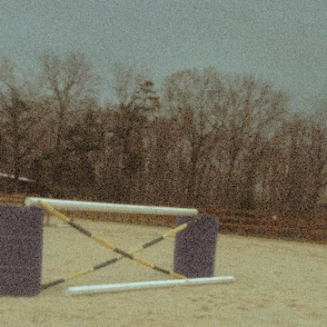

GOAL
change my career in six months Weeks Left
13
☰

About Me!
Where to start. I guess the beginning works. I was born in Jacksonville Florida, ran around as a sun tanned little indian child catching green aloes and spending half my waking hours immersed in water, the ocean, the river or somebody's pool. When I was eight we moved to northern Georgia. My passions grew bigger as I did, horseback riding in the woods, reading books, writing stories and always messing around with something on a computer.
DESIGNER & DEVELOPER

I was all about secret worlds. Even texting became like a little secret world I could live in.
My whole life I've always been working very hard at something. I always have some kind of little mission I'm on. It changes with me, but it's always very serious and I always give it everything I have. When I set my mind to something I have this it's gonna get done yesterday energy.
Now that I'm grown up I'm a mom of three babies. They are amazing kids and I love them insanely a lot. They always say you'd jump in front of a bus for your kids, but I really actually would jump into mortal peril for them no question. They are so great, so little at the moment, but all so crazy full of personality. (No godzilla's were harmed in the making of this gif.)

I still think snow is pretty magical, but the call of summertimeland is strong and I may yet return to sunbrowned skin days spent living half in the water.
And that is all I can think of to say about myself at the moment.
Cheers.